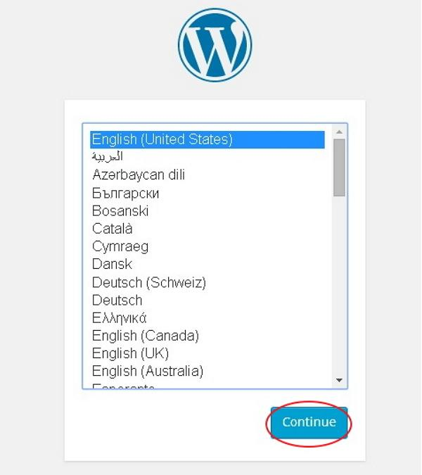

Introduction
Welcome to Chatloop WordPress Theme!
We would like to thank you for purchasing Chtloop WordPress Theme!
We are very pleased that you have chosen Chatloop for your website, you will be never disappointed!
Chatloop App Landing Page – This is App Landing Template. It is designed with Elementor and Redux Framwork for modern Look. Chatloop is a very good Wordpress Template, which suites best for any kind of App landing page. Chatloop looks beautiful at any size, be it a laptop screen, iPad, iPhone, Android Mobile or tablets. It has purpose oriented design, responsive layout and special features. Chatloop is Well organized and very easy to customize. It has everything you need to launch your site within next few hours!
Suitable for anyone who is looking for app, app landing, app landing page, app landing template, App Showcase, app store, app template, app website, clean app landing, creative app landing page, landing page, mobile app landing page, modern app Landing, parallax, Simple App Landing Templates.
Thank you, we hope you to enjoy Chatloop WordPress!
WordPress Information
To install this theme you must have a working version of WordPress already installed. If you need help installing WordPress, follow below sites and tutorials from WordPress.com, hope everything you need are there.
Server Requirements
The first step in setting up your WordPress plugin. But before doing so, you should check your hosting environment. As a guide, we recommend:
- PHP version 7.2 or greater
- MySQL version 5.6 or greater
- WordPress memory limit of 128 MB or
- greater(version 5.5.3)
- HTTPS support
Wordpress Installation
- Extract the downloaded WordPress folder and upload it into your web server or localhost.
-
Open your browser and navigate to your WordPress
file path, then you will get the first
screen of the WordPress
installer as shown in the following screen. In our
case, the path is localhost/
.

Select your language for the WordPress and click on Continue. -
In this step, you can view the information
needed for the database before proceeding with
WordPress installation.
Click on Let's go! -
Here, you have to enter the information about
the MySQL database as described in the
following screen.
- Database Name − Enter the database name which you have created in MySQL database for WordPress.
- Username − Enter the user name of your MySQL database.
- Password − Enter the password which you had set for MySQL database.
- Database Host − Write the host name, by default it will be localhost.
- Table Prefix − It is used to add prefix in the database tables which helps to run multiple sites on the same database. It takes the default value.
After filling all information, click on Submit button. -
WordPress checks the database setting and gives
you the confirmation screen as shown in the
following snapshot.
Click on Run the install -
Enter administrative information.
It contains the following fields −- Site Title − Enter the name of the site which you are going to create in WordPress.
- Username − Enter the username as per your choice while logging in the WordPress.
- Password twice − Enter password two times to protect your site.
- Your E-mail − Enter your e-mail address which helps to recover the password or any update.
- Privacy − It allows the search engine to index this site after checking the checkbox.
- After filling all the information, click on the Install WordPress button.
-
After installation being successful, you will
get a screen of the stating success as seen in
the following screen.
You can view your username and password detail added in WordPress. Click on Log In button. -
After clicking on login, you will get a
WordPress Admin Panel as depicted in the
following
screen.
{kind=link}
{kind=link}
{kind=link}
{kind=link}
{kind=link}
{kind=link}
{kind=link}
Theme Installation
Download and Install the Chtloop theme Steeps:
Note: You can also install required plugin for Chatloop Theme.
- Begin by downloading the chatloop .zip file from the source onto your local computer.
- From your WordPress Administration area, head to Appearance → Themes and click Add New.
- The Add New theme screen has a new option, Upload Theme.
- The theme upload form is now open, click Choose File, select the chatloop zip file on your computer and click Install Now.
- Select the Appearance tab and open the Themes directory,locate the theme and click the Activate link.
Plugins
Necessary Plugins
Translation
Theme and Plugin Translation
This is the traditional method, and the method
most
of our users use.
To locate the Languages folder, follow this path:
→ wp-content/themes/chatloop/languages
→ wp-content/plugins/
chatloop-chat/languages
Whenever users update the theme and the plugin, the whole Theme folder and Plugin Folder are replaced with a new and updated folder, which in turn overwrites their translation files.
If you choose to store your language files using this method, remember that the file structure is only the language name. For example, if the language files are in the English(Canada) language, the file names would be ec_EC.mo and ec_EC.po.
You can translate default po file with POEdit tool. You can see here for more details.
If you choose to use this method, do not forget to backup files before updating.
Demo Importer
Import Theme Demo Data
Many other premium WordPress themes, Demo Importer and Theme Demos in Authentic are different things.
Demo Importer is dummy posts and sample pages, while Theme Demos are presets that make your content look different. single-click importable demo content (pages, blog posts, etc.) to help you get started if you have a fresh WordPress installation.
Before importing demo data, make sure you have installed and activated required Plugins.
Import dummy posts and sample pages follow these steps:
- Install One Click Demo Import plugin → Activate that plugin
- Navigate to Appearance → One Click Demo Import.
- Click Import Demo Data.
After the import you may uninstall the One Click Demo Import plugin.